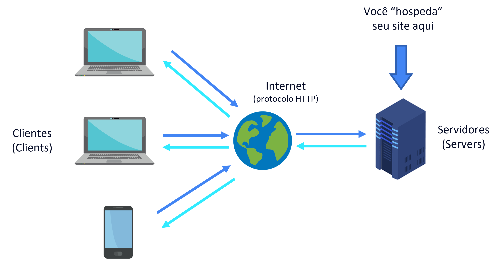

INSTRUÇÕES: Neste índice você deve colocar os tópicos que mais entendeu. Estes apenas são sugestões.
O primeiro dispositivo a ser considerado um computador foi o Harvard Mark I, criado em 1944 nos Estados Unidos. Ele ocupava uma sala inteira pois funcionava à base de dispositivos eletromecânicos chamados válvulas (imagem abaixo)
São os dispositivos pelos quais os usuários finais vão estar acessando, seja através da intranet ou da internet. O conteúdo desejado costuma ser acessado através de um navegador (browser) ou um aplicativo.
Servers (do inglês: "servidores") são os dispositivos responsáveis por se comunicar com o usuário final (client) para fornecer a informação desejada. Existem diferentes tipos de servidores: os que fazem a ponte entre o client e o banco de dados pela intranet, os que protegem a rede de ameaças externas, os que traduzem o endereço de texto para números (DNS), endereçamento de email e streaming de conteúdo (geralmente vídeos).
O HTML é um arquivo estruturado em três partes principais: Doctype, Head e Body.
Além disso, é importante explicarmos os conceitos e utilização de Tags e Atributos (confira abaixo).
As tags são elementos usados para informar ao navegador a estrutura do site. Ou seja, o navegador vai ler o arquivo HTML e gerar o conteúdo visual de acordo com a estrutura apresentada. As tags são sempre escritas dentro dos sinais "maior que" e "menor que": < >
Exemplo 1: para informar ao navegador que você vai iniciar o cabeçalho do arquivo HTML, você deve iniciar o texto com a tag < head>; da mesma forma, utilizamos a tag de fechamento < /head> para indicar que nosso cabeçalho finalizou.
Exemplo 2: para informar a estrutura de Título 1 (prinicipal) e subtítulos, o HTML utiliza as tags < h1>, < h2>, ... até o < h6>. Confira abaixo um exemplo de como a formatação muda de acordo com a tag:
Atributos são as características que podemos fornecer a uma tag. Se você cria uma tag de link, você pode atribuir a URL para a qual o link vai redirecionar, bem como solicitar que o navegador abra o link em uma nova aba. Já na tag de imagem < img>, você pode atribuir características como a altura e largura da imagem, um texto descritivo para acessibilidade e o link da origem da imagem.
Exemplo: Abaixo está a linha de código que faz o navegador abrir um link externo em uma nova aba. Os termos "href" e "target" são os atributos da tag "a".
< a href="https://www.javatpoint.com/html-5-tags" target="_blank">javatpoint.com< /a>
Listas que apresentam uma ordenação de ítens a ser apresentada. Pode ser uma lista crescente ou decrescente feita com números ou letras.
Para isso, utilize as tags de abertura < ol> e de fechamento < /ol>.
Exemplo:
Listas que apresentam uma listagem de ítens sem uma ordem específica. Para isso, utilize as tags de abertura < ul> e de fechamento < /ul>.
Exemplo: